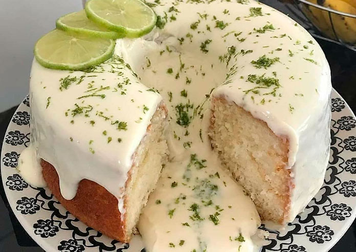

Receita de Bolo de Limão

Ingredientes
Para o bolo:
- 2 ovos (claras em neve)
- 1 e 1/2 xícara de açucar
- 3 colheres (sopa) margarina
- suco de 1 ou 2 limões (depende do tamano)
- raspas casca limão
- 3 e ¹/2 xícaras de farinha de trigo
- 1 xícara de leite
- 2 colheres (sopa) fermento em pó
Para a cobertura:
- 2/3 lata de leite condensado)
- raspas da casca de 1 limão pequeno
- suco de 1/2 limão
Modo de Preparo
Bolo:
- Bater no liquidificador as gemas, o açúcar e margarina.
- Em seguida juntar o suco e raspas limão, o leite e farinha aos poucos.
- Por último misturar, delicadamente, as claras em neve e o fermento.
- Espalhar a massa em uma assadeira retangular média já untada e assar no forno (já preaquecido) por mais ou menos 40 minutos em temperatura de 180ºC.
Cobertura:
- Misturar tudo em uma panela pequena e levar ao fogo mexendo sempre até levantar fervura.